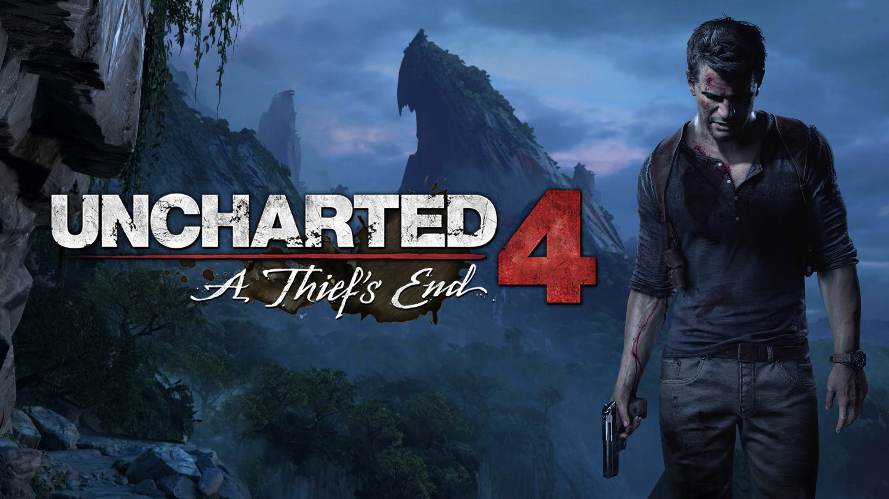

Template
Uncharted 4: A Thief's End
Rating: 9
In amongst its frantic combat, slick parkour, and outrageous action choreography, Uncharted 4: A Thief’s End achieves something wonderful: maturity. This is less a breezy lad’s tale revelling in fortune and glory and more a story about the lads when they’re all grown up, bolstered by an equally developed graphics engine and career-high performances from its cast. A surprisingly assured set of multiplayer modes ices the cake.
What lets it down, however, is an uninspired and overly long third act which slows down its pace considerably with curiously repetitive gameplay. Uncharted 4 consequently falls short of the greatness achieved by some of developer Naughty Dog’s leaner, more inventive predecessors.
Its 15-hour experience kicks off with focus. Uncharted 4’s story is established in a compelling handful of chapters that weave their way through different time periods with tightly directed cinematic flair. While its setup is overly familiar - Nathan Drake and Elena Fisher are attempting to retire from action-heroism and live a normal life until Nate’s presumed-dead brother turns up with an offer he can’t refuse - a strong emotional throughline is born from the characters’ struggle to reconcile their adult responsibilities with the promise of excitement they secretly crave. Uncharted 4 does a terrific job of exploring a more world-weary group of adventurers, with their concerns and musings layered throughout its quieter moments.
These incidental conversations are a marvel. It’s here that we see characters bristle and soften, brought slowly to life with considered writing and a peerless voice cast. Performances from series veterans Nolan North (Nathan Drake), Emily Rose (Elena Fisher), and Richard McGonagle (Victor Sullivan) are as big-hearted as ever, while newcomers Troy Baker (Samuel Drake), Laura Bailey (Nadine Ross), and Warren Kole (Rafe Adler) are nicely understated in more enigmatic roles.
Uncharted 4’s companion characters never break the spell in more frantic or tense sections, either. If you choose to play stealthily, they’ll crouch down in the long grass beside you (and unlike Ellie in The Last of Us, they do an excellent job of staying out of enemy sightlines). If they’re in your way while climbing, they’ll let you clamber over them. They’re competent in gun fights, helpful in traversal, and typically witty throughout. They feel vital.
Smooth Criminal
This level of polish and slickness permeates Uncharted 4. During traversal you can now reach for platforms by controlling Nate like a puppet with the DualShock thumbstick, which leads to fluid, unbroken climbing. A new 4x4 controls well over tricky terrain, and Uncharted 4’s camera worships Nate’s grappling hook, lovingly zooming out as he swings off of cliff faces to bring home a magnificent vista. Steep gravel paths (a personal favourite) send Nate slipping across cliff faces like they were waterslides.
Naughty Dog has expanded its terrain in order to make the most of these new tools. While I would have enjoyed more to do in this larger land mass - there’s disappointingly little to reward exploration of its various nooks and crannies beyond the occasional sparkling bit of treasure and a great view - I appreciated that occasionally there was more than one pathway to reach my goal. For a series defined by linearity, even the suggestion of choice is refreshing.
The same can be said for the stages of more violent action. While you’re occasionally flung into the middle of a group of mercenaries with little to do but shoot your way out, other encounters take place on elaborate adventure playgrounds allowing for more stealthy play. I appreciated the option, even if this is fairly pedestrian and routine stealth gameplay in 2016: characters can be tagged for tracking, long grass is there for silent takedowns, and enemies linger on ledges begging to be grabbed by the ankle from below or kicked off from behind. That’s not to say it’s done poorly – it’s as polished as everything else in Uncharted 4 – it simply doesn’t do anything surprising or interesting. More, considering AI switches to a cautionary state at any sign of trouble, I was disappointed I couldn’t move bodies.
If you’re noticed, Uncharted 4’s bad guys will spring into action and distinguish themselves in combat. Open level design allows them to pull relatively intelligent moves like flanking, and they’ll rarely forget you’re there if you try to hide (while hanging off a ledge, for example, they’ll stamp on your hands). Such credible behaviour means you have to keep moving in battle; crouching behind an indestructible pillar to regain your health is no longer feasible. While shooting in Uncharted 4 is satisfying if unremarkable, enemies are now savvy enough – and thankfully less spongy – that there’s a genuine satisfaction born from each kill. It’s fun, frantic stuff.
Somehow, the visuals keep up with it all. Unlike past Uncharted games where very strict linearity allowed for very carefully orchestrated beauty between stretches of more utilitarian sections built for action, Uncharted 4 manages to be all gorgeous, all the time. The big vistas are predictably impressive, but it’s the little details that really astound: the way snow settles on Nate’s hair, the shocking green of an underwater plant, the reflection cast off of an oil painting. The regularity of such beauty borders on ridiculous: it may be capped at 30 frames per second, but this is the prettiest game I’ve ever played.
A Thief's End
With such strong systems at its disposal, then, it's disappointing that Naughty Dog doesn’t build more theatrical context around them. Regarding the series’ trademark outrageously choreographed action sequences, Uncharted 4’s campaign suffers from a curious lack of imagination. There are bright spots: there’s a brilliant car chase in Madagascar and a vertigo-inducing section involving clambering up a clock tower that really stand out. But otherwise the thrills here tend to be of a more predictable nature: lots of handholds breaking at the last minute, buildings coming down, an occasional easily solved puzzle in an opulent interior. It’s 2016, and after three Uncharteds (and two contemporary Tomb Raiders) we’ve seen it all before.
This becomes a big problem in Uncharted 4’s third act, where the pacing slows down to a crawl. This jungle section is repetitive, and Nate and friends do little in it but climb and shoot, rinse and repeat. After a while, every encounter blurred into one amorphous amalgamation of shootouts, cliff faces, and pushing crates off of ledges for your companion to clamber up. As it’s the longest section in Uncharted 4, it eventually became a slog.
Things pick up significantly by the end. The thoughtful exploration of these characters and their relationships with each other has a subtle payoff which bucks against the typical action coda, and it’s to Naughty Dog’s credit that it’s unafraid to stay true to its characters and their motivations, even if they aren’t as explosive as one might expect.
After The End
There’s not much to do in the main campaign once you’ve finished it, bar completing your treasure collection, but there’s extended life to be had in Uncharted 4’s confident 5v5 and 4v4 multiplayer. Though it’s still a sideshow to the main campaign in scope, its four modes – Team Deathmatch, Plunder, Command, and Ranked Team Deathmatch – embody the series’ most enjoyable qualities: camaraderie (your teammates can be revived when in a downed state), sheets of bullets, and a constant sense of momentum. On the latter point, it helps that the stages for play have been opened up from previous games thanks to the grappling hook: zipping around to high vantagepoints to get the drop on enemies lends itself to a dizzying sense of verticality.
Deathmatch is ranked, which lends competitive longevity and appropriate skill matchmaking to Uncharted 4’s multiplayer, but Plunder and Command are the most fun. Command is a map-domination variant that places greater emphasis on teamwork by putting a target on the back of the strongest player in each team - the ‘captain.’ As you try and capture territories and hunt the enemy’s captain, you also have to protect against the opposing team trying to kill yours. You’ve got to be even more alert than usual, even as you’re pursuing an objective.
Plunder works similarly to previous Uncharteds, where the goal is to carry an idol to a central point on the map before the other team reaches it with theirs. Slowly heaving an idol to your teammate across a giant ravine while being shot at on all sides makes for a hilarious contrast in pace.
A sense of chaos is further encouraged by the outrageous abilities you can now harness in all of Uncharted 4’s multiplayer modes. Spending earned points to temporarily wield supernatural powers like teleportation, which hurtles you across the map, and summon a sarcophagus that attacks the enemy with flying evil spirits can totally interrupt the rhythms of what would otherwise be a normal firefight.
The AI sidekicks available for every player are a clever new addition, too. Instead of buying flashy powers, you can summon enormously handy AI-controlled helpers in battle. They’re capable of fulfilling basic tasks like sniping, brute-force shooting, and healing – as well as giving your opponents something to shoot at that isn’t your head. If you’re up against them, there’s a franticness born from trying to take them down while being attacked from all sides.
It plays beautifully. Because it runs at 60fps, the shooting feels better than it does in the main campaign, and there’s just as much fluidity to scaling walls and swinging, but now with a palpable smoothness. Naughty Dog does a great job at twisting familiar environments from the main campaign into interesting shapes across eight maps: soaring through the air against a boundless Mediterranean sea before leaping into the opulence of an Italian auction house – all the while shooting at other players – is exhilarating.
These maps are well suited for shootouts, leaping, and magic powers. Wide open spaces peppered with lookout spots make for dramatic shootouts, winding corridors under heaving pirate ships are there for intimate encounters, and spots for the grappling hook are everywhere, meaning every game feels alive with motion.
While it’s difficult to say what Uncharted 4’s multiplayer will look like in the future, there are enough unlockables and perks to act as a carrot for completionists, and Naughty Dog has promised more maps, mysticals, and a co-op mode in the future that I’ll be sticking around for.
The Verdict
Uncharted 4: A Thief’s End is a remarkable achievement in blockbuster storytelling and graphical beauty. Though it’s let down by a lack of imagination and some self-indulgence, especially in a third act that drags on far too long, Uncharted 4 carries on the series’ proud tradition of peerless polish and style, with a great multiplayer component to boot. Most importantly, it’s a gentle sendoff to the rag-tag group of characters we’ve known for nine years. A worthy thief’s end, indeed.